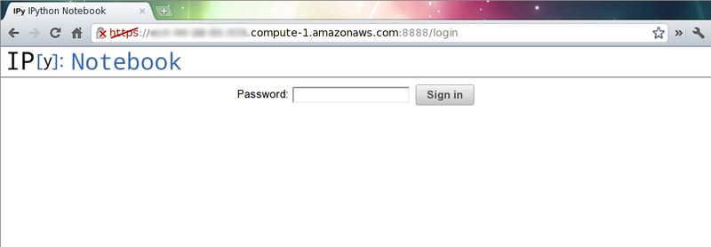
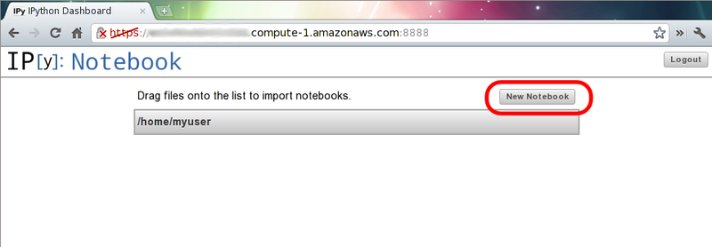
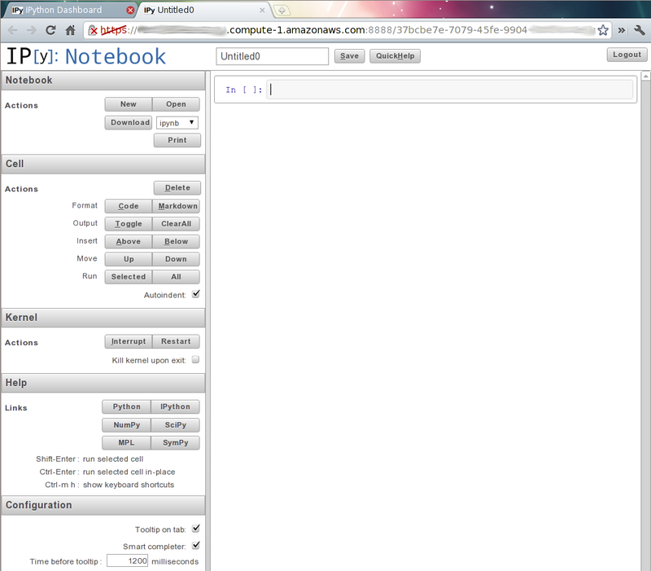
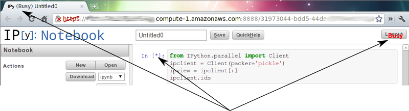
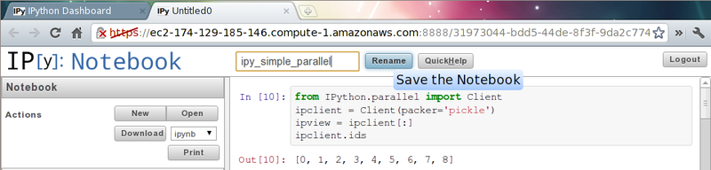
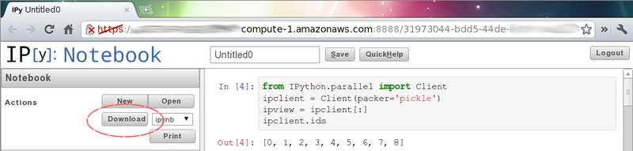
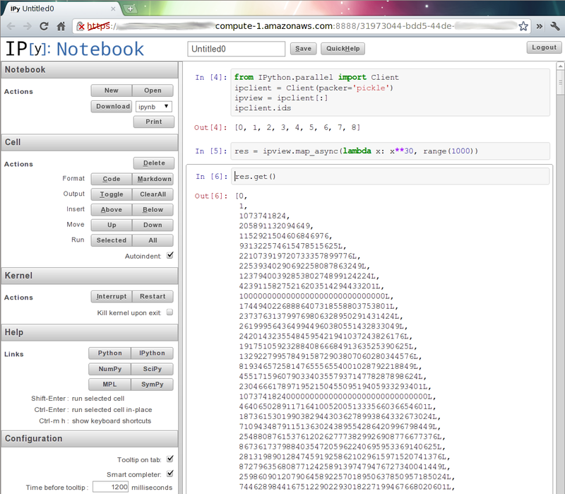

Note
These docs are for IPython 0.13+ which is installed in the latest StarCluster 12.04 Ubuntu-based AMIs. See starcluster listpublic for a list of available AMIs.
To configure your cluster as an interactive IPython cluster you must first define the ipcluster plugin in your config file:
[plugin ipcluster]
setup_class = starcluster.plugins.ipcluster.IPCluster
If you’d like to use the new IPython web notebook (highly recommended!) you’ll also want to add the following settings:
[plugin ipcluster]
setup_class = starcluster.plugins.ipcluster.IPCluster
enable_notebook = True
notebook_directory = notebooks
# set a password for the notebook for increased security
notebook_passwd = a-secret-password
After defining the plugin in your config, add the ipcluster plugin to the list of plugins in one of your cluster templates:
[cluster smallcluster]
plugins = ipcluster
To use your new IPython cluster log in directly to the master node of the cluster as the CLUSTER_USER and create a parallel client:
$ starcluster sshmaster mycluster -u myuser
$ ipython
[~]> from IPython.parallel import Client
[~]> rc = Client()
Once the client has been started, create a ‘view’ over the entire cluster and begin running parallel tasks. Below is an example of performing a parallel map across all nodes in the cluster:
[~]> view = rc[:]
[~]> results = view.map_async(lambda x: x**30, range(8))
[~]> print results.get()
[0,
1,
1073741824,
205891132094649L,
1152921504606846976L,
931322574615478515625L,
221073919720733357899776L,
22539340290692258087863249L]
See also
See the IPython parallel docs (0.13+) to learn more about the IPython parallel API
Note
You must have IPython 0.13+ installed to use this feature
If you’d rather control the cluster from your local IPython installation use the shell command and pass the --ipcluster option:
$ starcluster shell --ipcluster=mycluster
This will start StarCluster’s development shell and configure a remote parallel session for you automatically. StarCluster will create a parallel client in a variable named ipclient and a corresponding view of the entire cluster in a variable named ipview which you can use to run parallel tasks on the remote cluster:
$ starcluster shell --ipcluster=mycluster
[~]> ipclient.ids
[0, 1, 2, 3]
[~]> res = ipview.map_async(lambda x: x**30, range(8))
[~]> print res.get()
If you wish to run parallel IPython scripts from your local machine that run on the remote cluster you will need to use the following configuration when creating the parallel client in your code:
from IPython.parallel import Client
rc = Client('~/.starcluster/ipcluster/<cluster>-<region>.json'
sshkey='/path/to/cluster/keypair.rsa')
For example, let’s say we started a cluster called ‘mycluster’ in region ‘us-east-1’ with keypair ‘mykey’ stored in /home/user/.ssh/mykey.rsa. In this case the above config should be updated to:
from IPython.parallel import Client
rc = Client('/home/user/.starcluster/ipcluster/mycluster-us-east-1.json'
sshkey='/home/user/.ssh/mykey.rsa')
Note: it is possible to dynamically add new nodes with the starcluster addnode command to a pre-existing cluster. New IPython engines will automatically be started and connected to the controller process running on master. This means that existing Client and LoadBalancedView instance will automatically be able to leverage the new computing resources to speed-up ongoing computation.
The default message packer for IPython.parallel is based on the JSON format which is quite slow but will work out of the box. It is possible to instead configure the faster 'pickle' packer:
[plugin ipcluster]
setup_class = starcluster.plugins.ipcluster.IPCluster
enable_notebook = True
notebook_directory = notebooks
# set a password for the notebook for increased security
notebook_passwd = a-secret-password
packer = pickle
When using IPython 0.13 this will require to pass an additional packer='pickle'. For instance if running the client directly from the master node:
$ starcluster sshmaster mycluster -u myuser
$ ipython
[~]> from IPython.parallel import Client
[~]> rc = Client(packer='pickle')
If the msgpack-python package is installed on all the cluster nodes and on the client, is is possible to get even faster serialization of the messages with:
[plugin ipcluster]
setup_class = starcluster.plugins.ipcluster.IPCluster
enable_notebook = True
notebook_directory = notebooks
# set a password for the notebook for increased security
notebook_passwd = a-secret-password
packer = msgpack
And then from the client:
$ starcluster sshmaster mycluster -u myuser
$ ipython
[~]> from IPython.parallel import Client
[~]> rc = Client(packer='msgpack.packb', unpacker='msgpack.unpackb')
Note: from IPython 0.14 and on the client will automatically fetch the packer configuration from the controller configuration without passing an additional constuctor argument to the Client class.
Sometimes some IPython engine processes become unstable (non-interruptable, long running computation or memory leaks in compiled extension code for instance).
In such a case it is possible to kill all running engine processes and start new ones automatically connected to the existing controller by adding a some configuration for the the IPClusterRestartEngines plugin in your .starcluster/config file:
[plugin ipclusterrestart]
SETUP_CLASS = starcluster.plugins.ipcluster.IPClusterRestartEngines
You can then trigger the restart manually using:
$ starcluster runplugin ipclusterrestart iptest
StarCluster - (/cluster) (v. 0.9999)
Software Tools for Academics and Researchers (STAR)
Please submit bug reports to starcluster@mit.edu
>>> Running plugin ipclusterrestart
>>> Restarting 23 engines on 3 nodes
3/3 |||||||||||||||||||||||||||||||||||||||||||||||||||||||||||||||||||| 100%
The IPython cluster plugin comes with support for the new IPython web notebook. As mentioned in the intro section, you will need to specify a few extra settings in the IPython cluster plugin’s config in order to use the web notebook:
[plugin ipcluster]
setup_class = starcluster.plugins.ipcluster.IPCluster
enable_notebook = True
notebook_directory = notebooks
# set a password for the notebook for increased security
notebook_passwd = a-secret-password
The notebook_passwd setting specifies the password to set on the remote IPython notebook server. If you do not specify the notebook_passwd setting the plugin will randomly generate a password for you. You will be required to enter this password in order to login and use the notebook server on the cluster. In addition to enforcing a notebook password, StarCluster also enables SSL in the notebook server in order to secure the transmission of your password when logging in.
The notebook_directory setting makes it possible to use a custom folder on the master node. The path can be relative to the user home folder or be absolute. If left blank, the notebooks are stored directly in the home folder. If notebook_directory does not exist it automatically created at cluster start-up time.
Once you have these settings in the plugin’s config simply start a cluster and let the plugin configure your IPython cluster:
$ starcluster start -s 3 iptest
StarCluster - (/cluster)
Software Tools for Academics and Researchers (STAR)
Please submit bug reports to starcluster@mit.edu
... (abbreviated output)
>>> Running plugin ipcluster
>>> Writing IPython cluster config files
>>> Starting the IPython controller and 7 engines on master
>>> Waiting for JSON connector file...
/home/user/.starcluster/ipcluster/SecurityGroup:@sc-iptest-us-east-1.json 100% || Time: 00:00:00 37.55 M/s
>>> Authorizing tcp ports [1000-65535] on 0.0.0.0/0 for: IPython controller
>>> Adding 16 engines on 2 nodes
2/2 |||||||||||||||||||||||||||||||||||||||||||||||||||||||||||||||||||| 100%
>>> Setting up IPython web notebook for user: myuser
>>> Creating SSL certificate for user myuser
>>> Authorizing tcp ports [8888-8888] on 0.0.0.0/0 for: notebook
>>> IPython notebook URL: https://ec2-184-72-131-236.compute-1.amazonaws.com:8888
>>> The notebook password is: XXXXXXXXXXX
*** WARNING - Please check your local firewall settings if you're having
*** WARNING - issues connecting to the IPython notebook
>>> IPCluster has been started on SecurityGroup:@sc-iptest for user 'myuser'
with 23 engines on 3 nodes.
To connect to cluster from your local machine use:
from IPython.parallel import Client
client = Client('/home/user/.starcluster/ipcluster/SecurityGroup:@sc-iptest-us-east-1.json', sshkey='/home/user/.ssh/mykey.rsa')
See the IPCluster plugin doc for usage details:
/cluster/docs/latest/plugins/ipython.html
>>> IPCluster took 0.738 mins
Pay special attention to the following two lines as you’ll need them to login to the cluster’s IPython notebook server from your web browser:
>>> IPython notebook URL: https://ec2-XXXX.compute-1.amazonaws.com:8888
>>> The notebook password is: XXXXXXXXX
Navigate to the given https address and use the password to login:

After you’ve logged in you should be looking at IPython’s dashboard page:

Since this is a brand new cluster there aren’t any existing IPython notebook’s to play with. Click the New Notebook button to create a new IPython notebook:

This will create a new blank IPython notebook. To begin using the notebook, click inside the first input cell and begin typing some Python code. You can enter multiple lines of code in one cell if you like. When you’re ready to execute your code press shift-enter. This will execute the code in the current cell and show any output in a new output cell below.
You can modify existing cells simply by clicking in the cell, changing some text, and pressing shift-enter again to re-run the cell. While a cell is being executed you will notice that the IPython notebook goes into a busy mode:

You can keep adding and executing more cells to the notebook while in busy mode, however, the cells will run in the order they were executed one after the other. Only one cell can be running at a time.
Once you’ve finished adding content to your notebook you can save your work to the cluster by pressing the save button. Since this is a new notebook you should also change the name before saving which will temporarily change the save button to rename:

This will save the notebook to <notebook title>.ipynb in your CLUSTER_USER‘s home folder. If you’ve configured StarCluster to mount an EBS volume on /home then these notebook files will automatically be saved to the EBS volume when the cluster shuts down. If this is not the case you will want to download the notebook files before you terminate the cluster if you wish to save them:

Press ctrl-m h within the web notebook to see all available keyboard shortcuts and commands
See also
See the official IPython notebook docs for more details on using the IPython notebook
It’s also very easy to combine the notebook with IPython’s parallel framework running on StarCluster to create an HPC-powered notebook. Simply use the same commands described in the Using the IPython Cluster section to set up a parallel client and view in the notebook:
